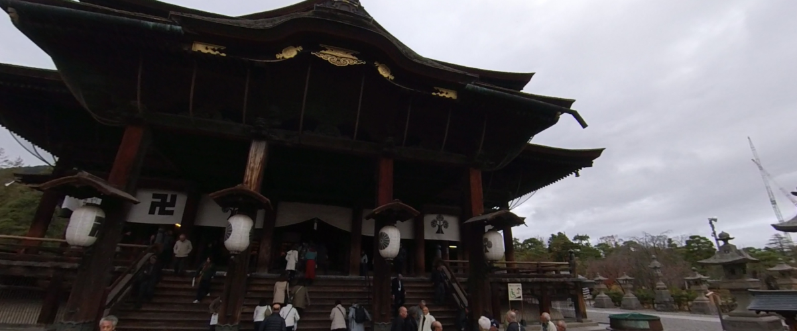
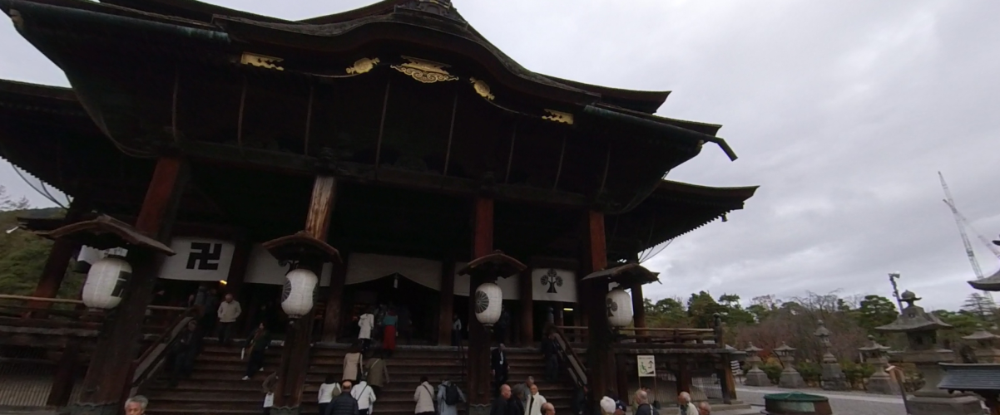

←スマホからご覧になる場合はこちらから
善光寺（ぜんこうじ）は、長野県長野市元善町にある無宗派の単立仏教寺院。
住職は「大勧進貫主」と「大本願上人」の両名が務める。本尊は日本最古と伝わる一光三尊阿弥陀如来で、
絶対秘仏である（開帳は前立本尊で行う）。
善光寺聖の勧進や出開帳などによって、江戸時代末には「一生に一度は善光寺詣り」と言われるようになった。
今日では御開帳が行われる丑年と未年に、より多くの参拝者が訪れる。
善光寺前立本尊御開帳（ぜんこうじまえだちほんぞんごかいちょう
数え年で7年に一度（現在は丑と未の年）、秘仏である御本尊様のお身代わりとして、
まったく同じお姿の「前立本尊」様を本堂にお遷しして全国の人々にお参りいただく盛儀です。
4月から5月にかけて行われ、平成二十七年（2015年）の御開帳には707万人の方が参詣されました。
現在の本堂建立の際、松代藩が普請奉行にあたったというご縁から、
毎回松代町から「回向柱（えこうばしら）」が寄進され、本堂前に立てられます。
回向柱は前立本尊の右の御手と善の綱で結ばれ、柱に触れる人々にみ仏のお慈悲を伝えてくれます。